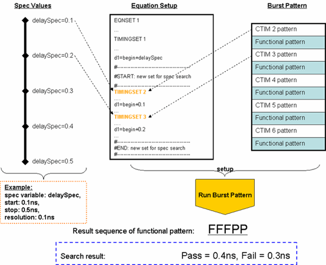
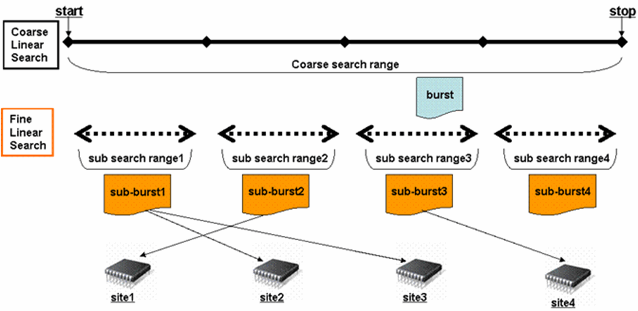

SetBasedSpecSearch
This test method performs spec search based on the pre-calculated level/timing set and burst label.
Before running spec search, the spec value is calculated with the specified start, stop and resolution of the search. Then a level/timing set is defined for each calculated spec value. After that a label is created for each level/timing set with CLEV/CTIM. Then a burst label is created with the labels.

The last step is to execute the burst label, query out the failure labels, find out the pass/fail transition point and derive the spec value at the P/F point.
Two algorithms are used in this test method to calculate the spec value, linear search and fast linear search.
In the fast linear algorithm, a linear search with a coarse step width is done to find out the transition point of the spec value. Then linear searches with fine step width are done in the transition range for each site with proper sub-burst pattern. The transition spec values are retrieved.

There are three modes in the test method, training mode, evaluation mode and production mode.
The training mode is used to generate level/timing and pattern setup files for spec search. You can try different setup and search conditions to tune on the performance.
The evaluation mode is used to evaluate the performance of the specified training conditions. The level/timing sets and labels have been generated in training mode and not saved yet. But the burst pattern is dynamically downloaded once during execution. You can not specify the search conditions in this mode.
The production mode is used do spec search in production with the trained conditions. All setup files need to be saved before executing the test method in production mode. You cannot specify the search conditions in this mode.
To use this test method, you need first specify the search conditions and run the test method in training mode to get the trained setup files. To evaluate the performance of the trained setups, execute the test method in evaluation mode. If you are satisfied with the performance, save the setup files and execute the test method in production mode. If the performance is not good, you can reload the setup files, change the search conditions and execute the test method in training mode and evaluation mode again.
This test method supports test table. But you need to enter the test names manually in the parameter. You can use both test table and testflow limits in a testflow. The test table has higher priority than testflow limits. If a test name used in the test flow is defined in both test table and testflow limits, the value defined in the test table will be used.
Limitations
- All limitations of CTIM/CLEV apply for this test method.
- In evaluation mode, burst pattern is downloaded during the test method execution. But this is avoided in the production mode. Use production mode for final test method execution.
- In multi-site test with fast_linear algorithm, set test suite flag Site match to on and flag Fail per label to off.
- This test method does not support DPS related specs. You can use SpecSearch.
- This test method does not support multi-port level spec search. You can use SpecSearch.
- If the search pattern is long, use SpecSearch for the test.
- Mask the pins which do not contribute to the test result in pattern tool.
Parameters
Parameter |
Type |
Description |
|---|---|---|
specVar |
SpecVariable |
The spec variables to be shifted |
algorithm |
string |
Algorithm to shift the spec variable. It can be: linear: linear search fast_linear: fast linear search |
start |
SpecValue |
Start point of the search |
stop |
SpecValue |
Stop point of the search |
resolution |
SpecValue |
Resolution of the search |
workMode |
string |
The test method working mode. It can be: training: used to generate test setups evaluation: used to evaluate the test performance production: used for high throughput test with trained setup |
workMode.CTIM/CLEV_Pattern_Template |
string |
Template pattern of calling CTIM/CLEV command. |
workMode.newBurstPatternName |
string |
(optional) the burst pattern to be created for set-based search. It combines CLEV/CTIM pattern and normal search pattern. if not specified, the test suite name is used to create the new pattern name, formatted as "_testsuitename_SpecSearch". |
output |
string |
Print message on UI report window or not. It can be: NONE: do not output to UI report window ReportUI: output message to UI report window |
testName |
string |
The test names to be used as limits. Default is SpecSearch_Test. If you want to use the test names defined in the test table or testflow limits, type in the test names manually. Make sure the test names are in the Test name column of the test table (Refer to Structure of a TMLimits CSV file) or in the Test Name column of Tests page of Flow Data Editor. |
Limits
SpecSearch_Test |
This limit is only used to enter the test number. |
Implementation pseudo code
ON_FIRST_INVOCATION_BEGIN
//Process parameter
Validate all parameters
Process search conditions
IF training THEN
Parse current equation setup
define new level/timing sets
create new pattern of CLEV/CTIM based on input template pattern
create burst pattern combing CLEV/CTIM pattern and search pattern
download new equation setup
activate new burst pattern
ELSEIF evaluation THEN
activate the target burst pattern
ENDIF
ON_FIRST_INOVATION_END
//do measurement
ON_FIRST_INVOCATION_BEGIN
Clear search result cache
Define error map record mode with DCRM
Run functional test with FTST
FOR_EACH_SITE_BEGIN
Query pattern result in burst with ERMP
Parse and record result for each site
FOR_EACH_SITE_END
IF further search is required THEN
Set default pattern with SQSL for all sites
FOR_EACH_SITE_BEGIN
Set pattern for site with SQSL
FOR_EACH_SITE_END
Activate pattern per site with APRM
Run functional test with FTST
Set default pattern with SQSL for all sites
FOR_EACH_SITE_BEGIN
Query pattern result in burst with ERMP
Parse and record result for each site
FOR_EACH_SITE_END
ENDIF
Restore back error map record mode to default with DCRM
ON_FIRST_INOVATION_END
datalog the test result
report result to UIFunctional changes
- Introduced in SmarTest 6.5.4
- SmarTest 7.1.0: The parameter workMode.searchPatternOnPort is removed.
- SmarTest 7.1.1: Mixed usage of test table and testflow limits in one testflow is supported in TML 2.1.1.